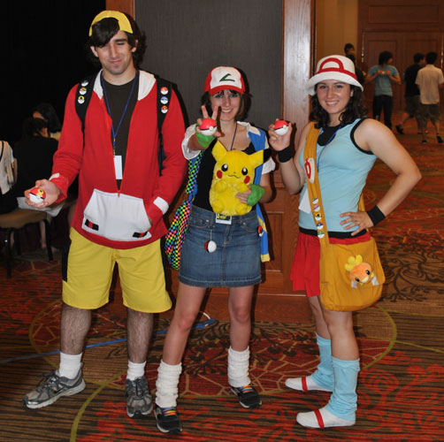
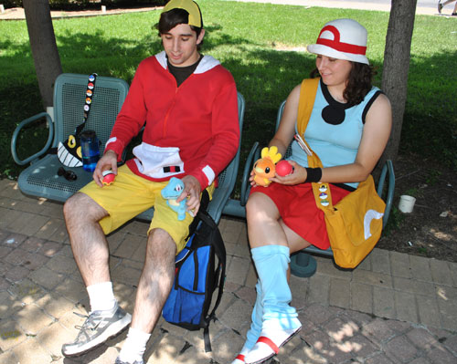
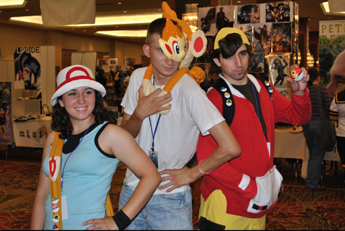
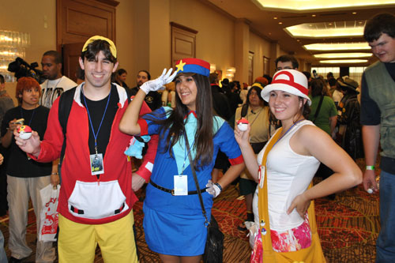
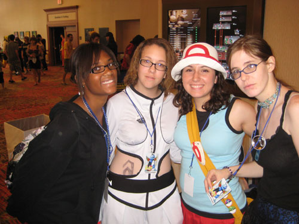

This costume was a made for AKON 19 and perfected for AKON 21 in Dallas, Texas.
This is by far the most comfortable costume possible in the universe--made for traversing Kanto and training pokemon, after all! The main thing that got "perfected" was the bag,
which was originally a thrown-together broadcloth travesty. In May I remade the bag to be functional, lined, and with an inside zippered pocket of awesome. In fact, I liked it so much
that I actually have been using it as a purse for several months now.
Also, if you see those nifty pokeball pins on my bag and on John's backpack, we got them from a booth at the con, but they sell them online here:
www.sanshee.com. Those guys are really nice if you do see them at a con! I swear that once me and John got six and pinned them on us, everyone and their mom did the same thing. It was awesome.
Pictures
Me and John in costume at the con! This girl was dressed as a girl-Ash!

Playing with our Pokemon in the park. My torchic is named
Chickychick. Totodile doesn't have a nickname, though "noose" comes to mind...

A really friendly Chimchar.

I didn't want to wear the same skirt and shirt all three days of the con, so I wore something I thought that Leaf Green might wear--a bright flowery skirt I made and a white tank. With all my props
no one had any problem recognizing me, so I guess it works!
A really cute Officer Jenny. And as a matter of fact, I asked, and that guy who appears to be looking at my butt is actually
admiring my foam actual-size pokeball that I am holding. So he said, anyway.

At AKON 21 I worked at the Infodesk, and these were some of my fellow infodeskers! We rocked the desk!

See Pokemon Trainer Gold
Back to Costume Gallery